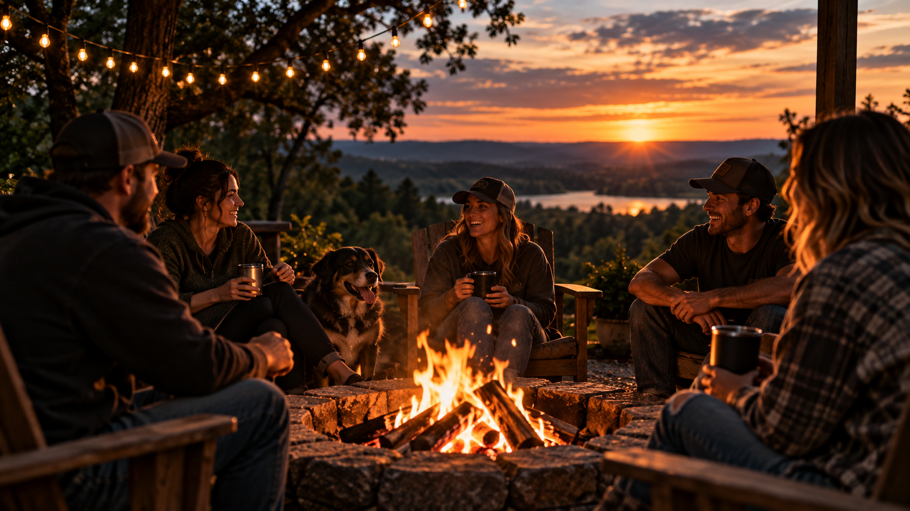
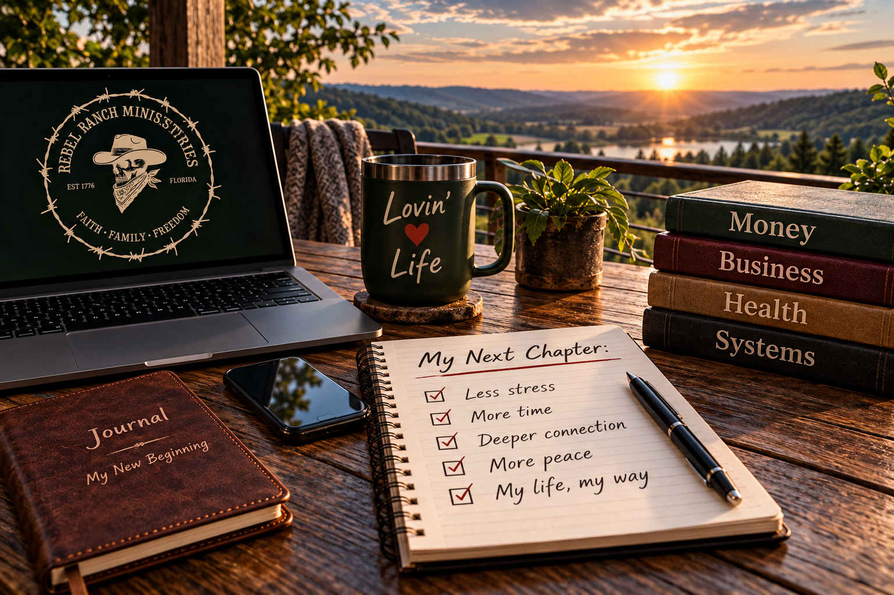

We learn real skills.
We focus on practical things people can use in real life: food, business, money, land, animals, tools, creativity, preparedness, and problem-solving.
About Rebel Ranch Ministries
We are building a better way forward for people who are tired of survival mode, tired of pretending broken systems are normal, and ready to learn, build, support, and create.
What We Mean
Most people are handed a life they never truly chose.
Society has structured a way of life and expects everyone to fall in line. Go to school. Get the job. Work your life away. Stay tired. Accept what you are told. Depend on systems you may no longer trust. Spend your life building for someone else while trying to convince yourself that is just how life works.
And they call it normal.
Responsible Rebellion is refusing to accept “this is just how life works” as the final answer.
It is not about tearing things down. It is not about rioting in the streets, screaming louder, or being reckless just to prove a point.
Responsible Rebellion is honest. Respectful. Grounded. Truthful. It is questioning everything, taking responsibility for what we can control, and staying in a constant state of learning, developing, and improving.
We believe people were made to create.
So when there are no better options, we create them.
We learn real-world skills so we are less dependent on systems built for us. We understand where our food comes from and respect the role nature plays in keeping life alive. We support our own. We support people like us — people actively creating better options, stronger families, and a life that works, regardless of what society says it should look like.
Rebel Ranch Ministries is here for people who know something is off.
People who want more than struggling and surviving day to day. People who are done with the rat race. People who are tired of joking that they are “living the dream” when they are really just trying to make it through the week.
This is about practical skills, useful resources, honest community, and finding a better way forward.
A better life for people like us.
What We Are Building
Rebel Ranch Ministries is building around the things people actually need: practical education, local support, honest community, food awareness, business freedom, creative outlets, animal care, partnerships, and resources that help families create better options.
We are not trying to be polished for the sake of looking polished. We are building something useful, grounded, and real.

The Direction
We focus on practical things people can use in real life: food, business, money, land, animals, tools, creativity, preparedness, and problem-solving.
We want people and small businesses to be seen, supported, and connected without big-box competition, marketplace commissions, or pay-to-play barriers.
We believe people need honest relationships, useful resources, shared knowledge, and a place where they can bring what they have and learn what they need.
This is not about escaping responsibility. It is about taking responsibility for what we can control and building a life we do not need to escape from.
Next Step
You do not have to have it all figured out. Bring what you have. Learn what you need. Support people like you. Build something better with us.
